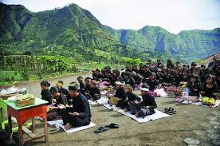

Melestarikan ritual Yadnya Kasada lewat narasi visual, suara, dan interaksi

Yadnya Kasada
Ritual tahunan masyarakat Tengger
Gunung Bromo, Jawa Timur
Sejak abad ke-13 Masehi
Versi legenda menyatakan Tengger berasal dari gabungan nama dua leluhur mereka, yakni Rara Anteng (Teng), putri raja Brawijaya, dan Joko Seger (Ger), putra seorang Brahmana Kediri. Keduanya menikah dan hidup di sekitar wilayah Penanjakan, tak jauh dari Gunung Bromo. Tapi mereka tak punya anak untuk waktu lama. Hingga akhirnya mereka berdoa kepada Sang Hyang Widhi Wasa.
Rara Anteng dan Joko Seger berjanji jika punya anak, salah satu anaknya akan dikorbankan. Tak lama kemudian, Rara Anteng hamil dan melahirkan. Anak mereka berjumlah 25. Setelah lahir, salah seorang anak mereka, Raden Kusuma, menghilang. Mereka kemudian mendengar suara Raden Kusuma keluar dari kawah Gunung Bromo.
“Keturunan Rara Anteng dan Joko Seger atau masyarakat Tengger dapat hidup aman sejahtera bila pada waktu-waktu tertentu mereka memberi korban ke kawah Gunung Bromo,” sebut Sudiro.
Catatan: "Kasada bukan sekadar ritual, tetapi janji yang harus dijaga.
Selama asap suci Bromo masih naik ke langit, selama manusia masih menggantungkan hidup pada bumi, maka rasa syukur dan pengorbanan harus tetap hidup dalam hati kita." -sesepuh
Memberi Korban
Warga Tengger yakin bahwa rutin memberi korban ke kawah Gunung Bromo pada waktu-waktu tertentu akan membawa keamanan dan kesejahteraan bagi mereka.
Maksud “memberi korban” adalah mendermakan sebagian hasil panen dan ternak ke kawah Bromo. Inilah asal-usul upacara Yadnya Kasada. Versi legenda ini tak berbeda jauh dari versi sejarah. Menurut sejumlah prasasti di sekitar pegunungan Bromo dan Negarakertagama, orang Tengger juga disebut telah bermukim di kawasan Tengger sejak masa Majapahit.
Sutarto dalam Legenda Kasada dan Karo Orang Tengger Lumajang, disertasi di Universitas Indonesia tahun 1997, menyebut orang-orang Tengger hidup sebagai petani yang tangguh. Alam sekitar pegunungan yang dingin menempa mereka bekerja sepanjang hari agar tubuh tetap hangat. Hasil panen melimpah dan kebutuhan mereka tercukupi oleh alam di sekelilingnya. Karena itulah mereka menghormati alam dan berusaha menjaga hubungan harmonis dengannya.
Gunung Bromo yang berkawah merupakan gunung terendah di antara gunung-gunung lain di kawasan Tengger. Orang Tengger menganggap Gunung Bromo suci. Ia adalah bagian dari alam yang telah membantu orang Tengger menghidupi kesehariannya.
Video Upacara
Video dokumenter pendek ini menampilkan proses persembahan dan suasana Bromo.
Perjalanan acara Tradisi Kasada dimulai pagi hari di Pura Luhur Poten, dengan persiapan persembahan dan arahan dari pendeta adat. Suasana khidmat menyelimuti peserta, mengawali doa dan ungkapan syukur kepada Tuhan dan leluhur.
Puncak acara adalah larung sesaji ke kawah Bromo, di mana hasil bumi, hewan ternak, dan bunga dilempar sebagai simbol pengorbanan dan doa. Beberapa sesaji ditangkap kembali sebagai berkah, menciptakan momen unik dan interaktif bagi pengunjung.
Acara berlanjut dengan dokumentasi, santap hidangan tradisional, dan workshop ringan, seperti membuat miniatur sesaji atau mengenal legenda Roro Anteng dan Joko Seger.
Penutupan diisi dengan doa dan foto bersama, meninggalkan pengalaman spiritual dan budaya yang kaya serta rasa syukur yang mendalam di hati peserta.
Galeri Tradisi
Prosesi di Pura PotenSesajen dan PersembahanRitual di KawahPakaian Adat TenggerSuasana Malam Kasada
AI & Pelestarian Tradisi
Tradisi Kasada tidak hanya indah secara budaya, tapi juga bisa dilestarikan dengan sentuhan teknologi modern. Dengan kamera 360° dan drone, setiap momen prosesi Kasada dapat direkam secara detail dan diubah menjadi pengalaman virtual AR/VR. Jadi, siapa pun dari seluruh dunia bisa “mengunjungi” Bromo dan merasakan ritual ini, tanpa mengganggu kesakralannya.
AI juga memainkan peran penting dalam menjaga sejarah dan visual budaya. Dengan algoritma pengolahan video dan foto, rekaman lama dapat diperbaiki kualitasnya, sementara momen-momen penting diberi tag sehingga mudah dicari. Bahkan AI generatif dapat membuat motif batik atau ilustrasi baru terinspirasi dari Kasada, memungkinkan budaya Tengger tampil di media digital dan souvenir tanpa menghilangkan nilai tradisional.
Selain itu, AI edukatif dan IoT mendukung interaksi dan keselamatan. Chatbot budaya dapat menjawab pertanyaan pengunjung atau generasi muda tentang sejarah, filosofi, dan tata cara upacara. Sensor lingkungan dan drone pemantau kawah Bromo memastikan ritual berlangsung aman, sekaligus membantu menjaga alam tetap lestari. Dengan kombinasi tradisi dan teknologi ini, Tradisi Kasada tidak hanya hidup di masa kini, tetapi juga terjaga untuk generasi yang akan datang.
Eksplorasi Kawasan Gunung Bromo
Lihat area Bromo secara langsung melalui Maps dan Street View 360°.